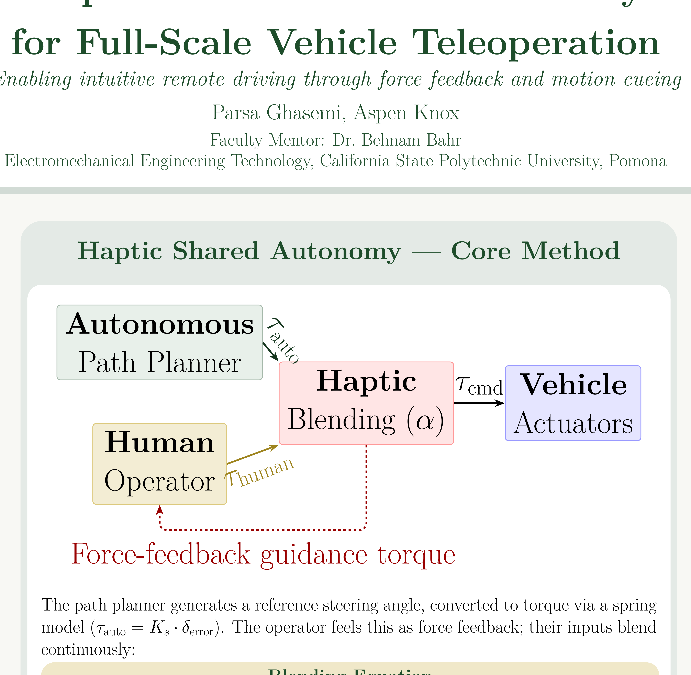
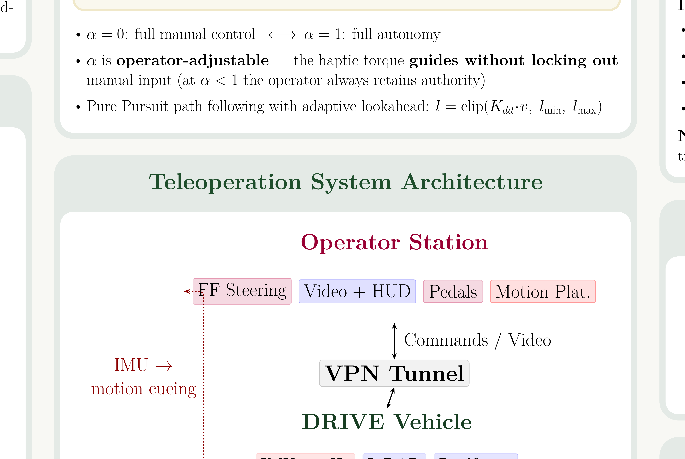
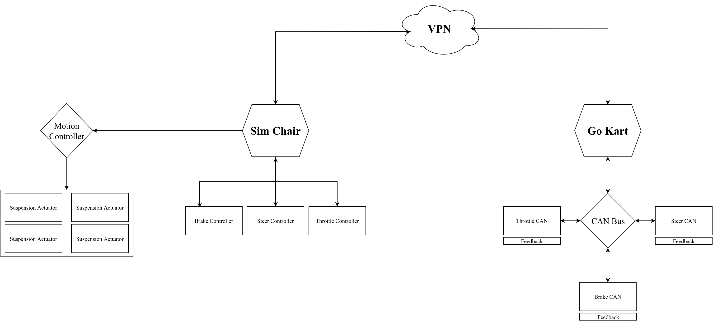
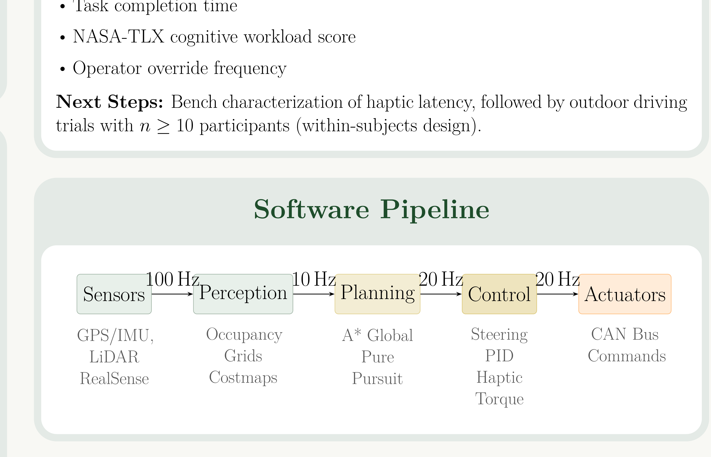
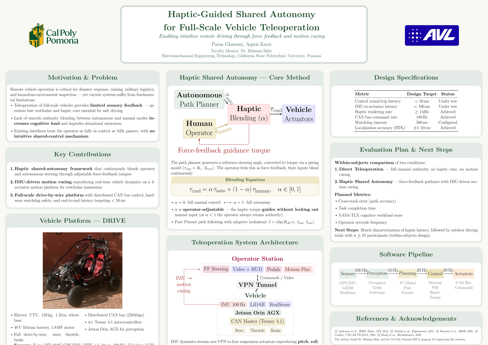

Torque Blending Law
τcmd = α · τauto + (1 − α) · τhuman, α ∈ [0, 1]
Remote vehicle teleoperation is essential in hazardous and inaccessible environments, yet current interfaces provide no vestibular or haptic feedback, allocate control authority in a binary fashion, and elevate cognitive workload. This work integrates force-feedback steering, motion cueing, and continuous authority blending into a full-scale drive-by-wire vehicle platform to address these gaps.
The operator station combines a force-feedback steering wheel, pedals, a triple-monitor display, and a six-degree-of-freedom motion platform with vestibular-aligned cueing. The vehicle platform comprises an electric UTV instrumented with multi-beam LiDAR, an RTK-GPS/IMU unit, and an RGB-D camera, all coordinated through a distributed CAN bus running at 250 kbps across four Teensy 4.1 microcontrollers. A haptic shared-control paradigm continuously blends autonomous and human steering inputs, allowing the operator to feel path-deviation guidance torques while retaining full override capability at any time.

A Pure Pursuit controller generates a reference steering angle from a planned path. The deviation between the reference and the current steering angle produces a guidance torque through a virtual spring model:
τauto = Ks · δerror
The operator perceives this torque as force feedback on the steering wheel. The commanded actuator torque is computed as a weighted blend of autonomous and operator inputs:
Torque Blending Law
τcmd = α · τauto + (1 − α) · τhuman, α ∈ [0, 1]

Vehicle IMU data streams over VPN to the operator station, where four suspension actuators reproduce pitch, roll, and road-surface vibration. Commands flow from the operator station through the VPN tunnel to the Jetson Orin AGX, which relays them to the CAN master controller. Distributed CAN nodes close actuator control loops locally at 100 Hz.

The sim chair hosts force-feedback steering, brake, steer, and throttle controllers that stream commands over a VPN tunnel to the vehicle's CAN bus. A separate motion controller drives four suspension actuators to reproduce vehicle dynamics. On the vehicle side, each actuator node (steer, throttle, brake) runs closed-loop control with position feedback on the CAN bus at 250 kbps.

The software architecture combines a Python-based perception and planning stack with real-time C++ firmware. Sensors (GPS/IMU, LiDAR, RealSense) feed data at 100 Hz into occupancy grid perception at 10 Hz, which drives A* global planning and Pure Pursuit path following at 20 Hz. The control layer computes steering PID and haptic torques, sending CAN bus commands to the actuators.

| Parameter | Specification |
|---|---|
| Chassis | Electric UTV, 159 kg, 1.23 m wheelbase |
| Powertrain | 48 V lithium, 1.8 kW brushless motor |
| Actuation | Drive-by-wire steer, throttle, brake |
| Bus | CAN 2.0B, 250 kbps, 4× Teensy 4.1 |
| Compute | NVIDIA Jetson Orin AGX |
| GPS/IMU | Xsens MTi-680G, RTK ±5–10 cm, 100 Hz |
| LiDAR | Velodyne VLP-16, 16-channel |
| Camera | Intel RealSense D435 (RGB-D) |
| Parameter | Design Target | Status |
|---|---|---|
| Control round-trip latency | < 50 ms | Under characterization |
| IMU-to-actuator latency | < 100 ms | Under characterization |
| Haptic rendering rate | ≥ 1 kHz | Verified |
| CAN bus command rate | 100 Hz | Verified |
| Watchdog timeout | 500 ms | Configured |
| Localization accuracy (RTK) | ±5–10 cm | Verified |
A within-subjects experiment (n ≥ 10) will compare direct teleoperation against haptic shared autonomy using cross-track error, task completion time, NASA-TLX workload, and operator override frequency. Bench characterization of haptic and motion-cueing latency will precede outdoor driving trials.

Presented at the CPP 14th Annual Student Research, Scholarship & Creative Activities Conference, March 7, 2026.
This work was conducted in the Autonomous Vehicle Laboratory at Cal Poly Pomona, directed by Dr. Behnam Bahr. Funding was provided by the Ganpat and Manju Center for International Collaboration and Innovation and the U.S. Department of Education.